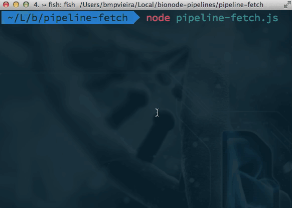
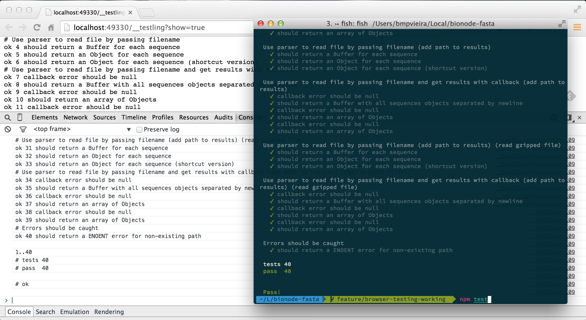

Bionode intro
bmpvieira.com/wurmlab-meeting15a

Bionode
Bionode.io - Modular and universal bioinformatics

Pipeable UNIX command line tools and JavaScript / Node.js APIs for bioinformatic analysis workflows on the server and browser.
#bionode
gitter.im/bionode/bionode
Problem: Too much data

Reproducibility crisis

Reproducibility layers

Code

Data
Workflow

Environment

Bionode - list of modules
| Name | Type | Status | People |
|---|---|---|---|
| ncbi | Data access |      |
|
| fasta | Parser | |
|
| seq | Wrangling | IM  |
|
| ensembl | Data access |    |
|
| blast-parser | Parser |  |
Bionode - list of modules
| Name | Type | Status | People |
|---|---|---|---|
| template | Documentation | |
|
| JS pipeline | Documentation | |
|
| Gasket pipeline | Documentation | |
|
| Dat/Bionode workshop | Documentation | |
Bionode - list of modules
| Name | Type | Status | People |
|---|---|---|---|
| sra | Wrappers | |
|
| bwa | Wrappers | |
|
| sam | Wrappers |  |
|
| bbi | Parser |  |
Bionode - list of modules

| Name | Type | People |
|---|---|---|
| ebi | Data access |  |
| semantic | Data access |  |
| vcf | Parser | |
| gff | Parser | |
| bowtie | Wrappers | |
| sge | Wrappers |   badryan badryan |
| blast | Wrappers | |
Bionode - list of modules
| Name | Type | People |
|---|---|---|
| vsearch | Wrappers | |
| khmer | Wrappers | |
| rsem | Wrappers | |
| gmap | Wrappers | |
| star | Wrappers | |
| go | Wrappers | badryan |
Dat workshop

Bionode
npm install -g bionode
bionode ncbi download gff bacteria
bionode ncbi download sra arthropoda | bionode sra fastq-dump
npm install -g bionode-ncbi
bionode-ncbi search assembly formicidae | dat import --json
Some problems I faced during my research:
- For web projects, needed to implement the same functionality on browser and server
- Difficulty getting relevant descriptions and datasets from NCBI API using bio* libs
- Difficulty writing scalable, reproducible and complex bioinformatic pipelines
Need to reimplement the same code on browser and server.
Solution: JavaScript everywhere
Difficulty getting relevant description and datasets from NCBI API using bio* libs
Python example: URL for the Achromyrmex assembly?
ftp://ftp.ncbi.nlm.nih.gov/genomes/all/GCA_000188075.1_Si_gnG
import xml.etree.ElementTree as ET from Bio import Entrez Entrez.email = "mail@bmpvieira.com" esearch_handle = Entrez.esearch(db="assembly", term="Achromyrmex") esearch_record = Entrez.read(esearch_handle) for id in esearch_record['IdList']: esummary_handle = Entrez.esummary(db="assembly", id=id) esummary_record = Entrez.read(esummary_handle) documentSummarySet = esummary_record['DocumentSummarySet'] document = documentSummarySet['DocumentSummary'][0] metadata_XML = document['Meta'].encode('utf-8') metadata = ET.fromstring('' + metadata_XML + ' ') for entry in Metadata[1]: print entry.text
Solution: bionode-ncbi
Difficulty getting relevant description and datasets from NCBI API using bio* libs
Example: URL for the Achromyrmex assembly?
http://ftp.ncbi.nlm.nih.gov/genomes/all/GCA_000204515.1_Aech_3.9/GCA_000204515.1_Aech_3.9_genomic.fna.gz
JavaScript
var bio = require('bionode') bio.ncbi.urls('assembly', 'Acromyrmex', function(urls) { console.log(urls[0].genomic.fna) })
bio.ncbi.urls('assembly', 'Acromyrmex').on('data', printGenomeURL) function printGenomeURL(urls) { console.log(urls[0].genomic.fna) })
Difficulty getting relevant description and datasets from NCBI API using bio* libs
Example: URL for the Achromyrmex assembly?
http://ftp.ncbi.nlm.nih.gov/genomes/all/GCA_000204515.1_Aech_3.9/GCA_000204515.1_Aech_3.9_genomic.fna.gz
JavaScript
var ncbi = require('bionode-ncbi') var ndjson = require('ndjson') ncbi.urls('assembly', 'Acromyrmex') .pipe(ndjson.stringify()) .pipe(process.stdout)
BASH
bionode-ncbi urls assembly Acromyrmex |
tool-stream extractProperty genomic.fna
Difficulty writing scalable, reproducible and complex bioinformatic pipelines.
Solution: Node.js Streams everywhere
var ncbi = require('bionode-ncbi')
var tool = require('tool-stream')
var through = require('through2')
var fork1 = through.obj()
var fork2 = through.obj()
Difficulty writing scalable, reproducible and complex bioinformatic pipelines.
Solution: Node.js Streams everywhere
ncbi .search('sra', 'Solenopsis invicta') .pipe(fork1) .pipe(dat.reads) fork1 .pipe(tool.extractProperty('expxml.Biosample.id')) .pipe(ncbi.search('biosample')) .pipe(dat.samples) fork1 .pipe(tool.extractProperty('uid')) .pipe(ncbi.link('sra', 'pubmed')) .pipe(ncbi.search('pubmed')) .pipe(fork2) .pipe(dat.papers)

Difficulty writing scalable, reproducible and complex bioinformatic pipelines.
bionode-ncbi search genome Guillardia theta | tool-stream extractProperty assemblyid | bionode-ncbi download assembly | tool-stream collectMatch status completed | tool-stream extractProperty uid| bionode-ncbi link assembly bioproject | tool-stream extractProperty destUID | bionode-ncbi link bioproject sra | tool-stream extractProperty destUID | bionode-ncbi download sra | bionode-sra fastq-dump | tool-stream extractProperty destFile | bionode-bwa mem 503988/GCA_000315625.1_Guith1_genomic.fna.gz | tool-stream collectMatch status finished| tool-stream extractProperty sam| bionode-sam
Difficulty writing scalable, reproducible and complex bioinformatic pipelines.
Difficulty writing scalable, reproducible and complex bioinformatic pipelines.
{ "import-data": [ "bionode-ncbi search genome eukaryota", "dat import --json --primary=uid" ], "search-ncbi": [ "dat cat", "grep Guillardia", "tool-stream extractProperty assemblyid", "bionode-ncbi download assembly -", "tool-stream collectMatch status completed", "tool-stream extractProperty uid", "bionode-ncbi link assembly bioproject -", "tool-stream extractProperty destUID", "bionode-ncbi link bioproject sra -", "tool-stream extractProperty destUID", "grep 35526", "bionode-ncbi download sra -", "tool-stream collectMatch status completed", "tee > metadata.json" ],
Difficulty writing scalable, reproducible and complex bioinformatic pipelines.
"index-and-align": [ "cat metadata.json", "bionode-sra fastq-dump -", "tool-stream extractProperty destFile", "bionode-bwa mem **/*fna.gz" ], "convert-to-bam": [ "bionode-sam 35526/SRR070675.sam" ] }
Difficulty writing scalable, reproducible and complex bioinformatic pipelines.
pipeline main run pipeline importpipeline import run foobar | run dat import --json
Extra slides
Bionode - Why wrappers?
- Same interface between modules (Streams and NDJSON)
- Easy installation with NPM
- Semantic versioning
- Add tests
- Abstract complexity / More user friendly
Bionode - Why Node.js?
Same code client/server side


Bionode - Why Node.js?


Reusable, small and tested modules

Benefit from other JS projects